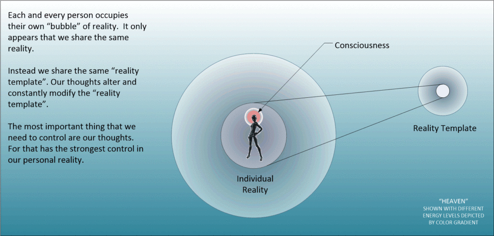

How do you remember the color “Chartreuse”? As a person who lived through the 1980’s, I clearly and most vividly remember it as a shade of reddish magenta. How do I know? Because it was popular at the time, dresses, furniture, wall paint, and brick-a-brack of various shapes and forms all used this color, and all were a deep wine-like color with a kind of pinkish glow. Yet, as much as my memory is clear on this, things have changed. An Alter-vús took place.
Alter-vús
How can the past change? Isn’t time a direct one-way arrow? A vector from which nothing can be undone? What is going on here, and why do my memories not jive up with history?
Good questions all.
Again, how do I know? Because I bought a complete living room set; a couch, love seat, and matching chair in chartreuse. I bought them in the mid 1980’s from a furniture store in Ridgecrest, California. We were told by the saleswoman that the color was Chartreuse and was the hottest thing in the 1980’s.
We ended up buying a couch and a love seat. We didn’t buy the stand alone chair. (Which in hind-sight we should of.) But, you know, I was younger then, and it was a different time and my personality was quite different.
Anyways, Chartreuse that we bought back in the middle 1980’s is not the color that it is associated with this world-line…
“The color chartreuse is broadly remembered as a shade of red. Some recall it as a maroon-ish red. Others describe it as a reddish magenta. The fact is, in this timestream, the color is yellow-green. The color gets its name from the liqueur, Chartreuse. However, I clearly recall a discussion with my mother, an artist, about the color chartreuse. I was a teen and used “chartreuse” to describe a magenta-ish dress. My mother couldn’t believe I was serious, and I remember looking in my childhood crayon box for a reddish crayon labeled “chartreuse,” but couldn’t find it. It was a humiliating moment for me, because she was right and — in our household — that was like confusing Miro and Michelangelo. It just wasn’t done. I didn’t think about it again until a comment about chartreuse appeared at this site. Then another did, and yet another. No matter how long I study this topic, I’m still astonished when a memory matches one of mine.” -Mandelaeffect
I am not the only one with different memories
Here are some comments from the web site. In September 2014, Stephanie said:
“I distinctly remember Chartreuse being a purple-pink color close to Magenta but a little darker. Less pink, more purple, but still too pink to be a true purple. I’m so confused??”
In Oct 2014, Misty said:
“…chartreuse was a dark red color…”
Rachel said:
“I used to think chartreuse was a dark red or burgundy color.”
Cameron said:
“Oh dear lord, i’m not alone. My whole life i thought Chartreuse was a deep red or purple. I considered it my favorite color for a long time. It wasn’t until my sophomore year in high-school that i found out it was a light yellow or green. My best friend was ordering her dress and wanted my opinion. She said that she was getting it in Chartreuse and i told her that was the one I thought would look nice, but the only picture she has was this gross pukey yellow and i said, “i’m glad you’re getting a different color than in the picture, because that is an awful color”. She then corrected me that the one pictured was the Chartreuse one. I guess, all along the color i thought i loved was actually Mauve?”
Donna said:
“Yes chartreuse was a maroon-red color. It was only a couple years ago that I saw a crayon marked chartreuse and it was this awful green-yellow color, and I thought that Crayola must have made a mistake!”
Cas said:
“I thought chartreuse was a rich sort of pinkish-magenta color?” I really thought chartreuse was a shade of red? Not green or yellow at all? When I clicked the Wikipedia link to see what color it is, I was so confused. I’m glad other people share in this confusion as well. Seems like too pretty of a name for “lime green”. Ick. Doesn’t sit right with me.”
K. said:
“And yet the etymology makes perfect sense. Then again, that might be at the heart of the potential difference. So, if this Carthusian order, who’s liquor got the name associated with it, and lend itself to the name of the colour instead made a particular blend of red wine, perhaps Chartreuse would get a different colour association. Honestly, without saying anything one way or the other on the matter, if I would have guessed without knowing, I’m certain I would have guessed it was a reddish colour. It does have the ring of a warm red drink to it. (source: http://en.wikipedia.org/wiki/Carthusians)”
One of the JMs (we have two) said:
“Yeah the whole color changing business is a weird one.”
Conclusions – What is going on
The construction of our reality is complex.
There is a fundamental “reality template” that we all access. There are also various realities that are spawned off this template. These spawned realities are what we experience; what our consciousness experience within this life.
However, that “reality template” is also subject to change. After all, the combined thoughts of everyone contribute to the “reality template”.

However, there are individuals who (through the power of mass communications, television and the internet) can redefine our reality. This is very dangerous, but happens all the time. When this happens; when this redefinition of our reality occurs, we find ourselves in a situation where our memories do not match our reality.
Since reality is a time-less constraint, the past and the future can be altered at will, by individuals and circumstances that deem it necessary.
Such as the “chartreuse” situation.
Take Aways
- All humans contribute to a reality template.
- The contributions come in the form of thoughts.
- Each human has a consciousness that uses the reality template.
- The consciousness reacts to the reality template and creates a unique and individualized reality from the the consciousness exists within.
- When disrupted thoughts or directed thoughts are powerful enough, then can disrupt the reality template.
- The issue of the chartreuse color being a maroon-red color is an example of baseline reality template changes.
FAQ
Q: What color is Chartreuse?
A: Currently it is associated with a yellowish green color.
Q: Why do people associate that color with a dark red?
A: Because their memories reside outside the reality. Since the reality is constantly being updated by the consciousness, there will be “glitches” where memories will not match. There are different terms for this phenomenon.
Q: What causes changes in the baseline reality template?
A: There are many things that will cause changes to a reality template. Often the most substantive are related to mass directed thoughts. This is when someone contrives a new narrative and exposes a multitude of people to think about it. The mass thought disruption will alter the reality template, and in so so doing the individual world-lines that our realities inhabit will be influenced as well.
MAJestic Related Posts – Training
These are posts and articles that revolve around how I was recruited for MAJestic and my training. Also discussed is the nature of secret programs. I really do not know why the organization was kept so secret. It really wasn’t because of any kind of military concern, and the technologies were way too involved for any kind of information transfer. The only conclusion that I can come to is that we were obligated to maintain secrecy at the behalf of our extraterrestrial benefactors.


MAJestic Related Posts – Our Universe
These particular posts are concerned about the universe that we are all part of. Being entangled as I was, and involved in the crazy things that I was, I was given some insight. This insight wasn’t anything super special. Rather it offered me perception along with advantage. Here, I try to impart some of that knowledge through discussion.
Enjoy.


MAJestic Related Posts – World-Line Travel
These posts are related to “reality slides”. Other more common terms are “world-line travel”, or the MWI. What people fail to grasp is that when a person has the ability to slide into a different reality (pass into a different world-line), they are able to “touch” Heaven to some extent. Here are posts that cover this topic.


John Titor Related Posts
Another person, collectively known by the identity of “John Titor” claimed to utilize world-line (MWI egress) travel to collect artifacts from the past. He is an interesting subject to discuss. Here we have multiple posts in this regard.
They are;